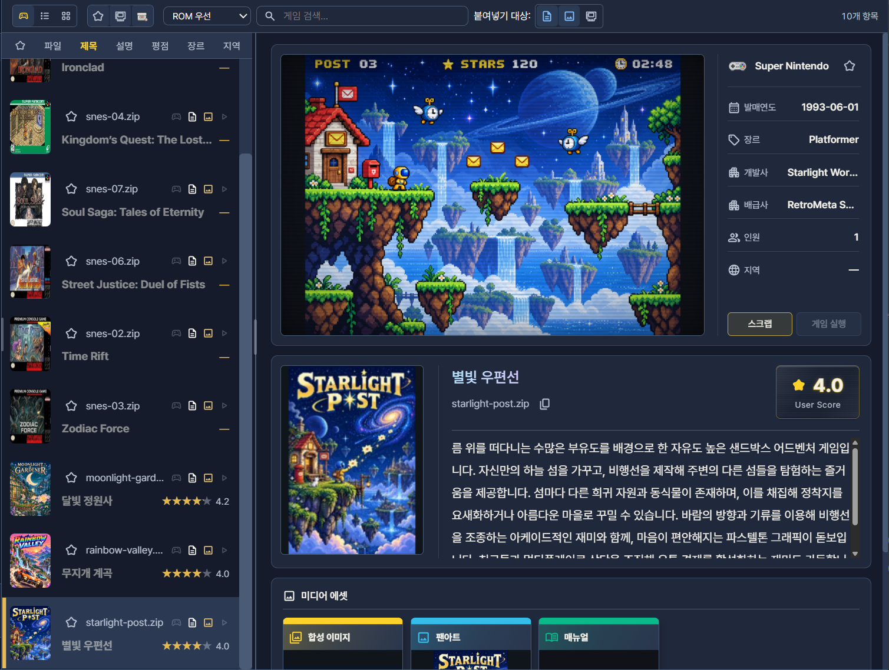
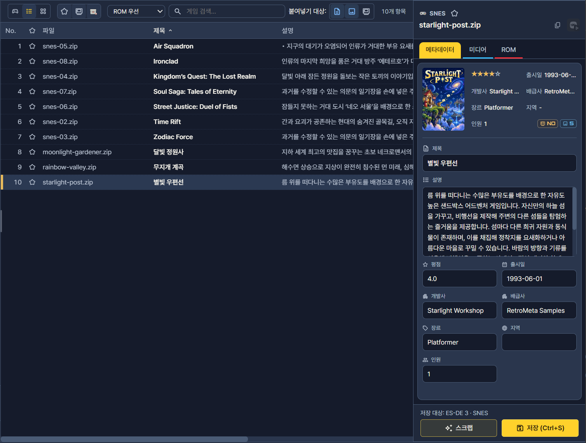
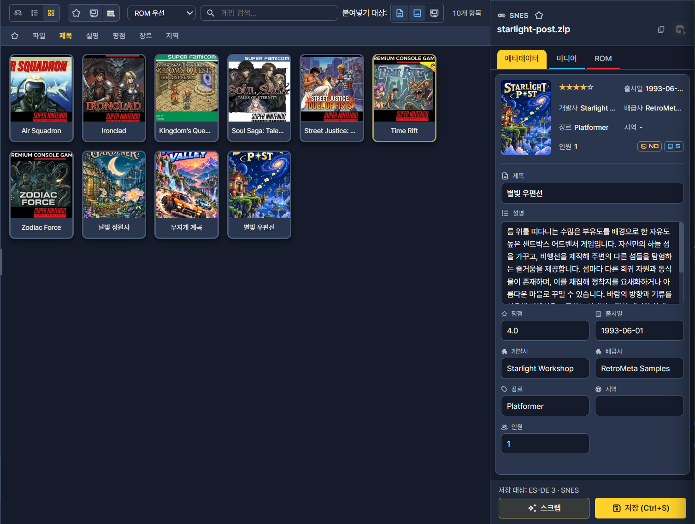

보기 모드
같은 게임목록을 아케이드·리스트·카드 세 가지 방식으로 보여 줍니다. 읽으면서 고칠지, 많은 게임을 표처럼 점검할지, 커버로 훑어볼지에 따라 모드를 고르면 됩니다. 모드를 바꿔도 작업 중인 컬렉션과 선택 상태는 그대로 유지되며, 목록 파일의 내용이 바뀌지는 않습니다.

게임 화면과 상세 정보를 함께 살펴보고 편집합니다.큰 예시 보기 ↓리스트
파일명·제목·평점 등 여러 게임의 정보를 열로 비교합니다.큰 예시 보기 ↓카드
커버 중심으로 탐색하고 비어 있는 미디어를 점검합니다.큰 예시 보기 ↓비교 요약
| 아케이드 | 리스트 | 카드 | |
|---|---|---|---|
| 알맞은 때 | 게임 화면·커버·설명을 함께 보며 읽고 고칠 때 | 많은 게임의 파일명·제목·평점을 비교하고 점검할 때 | 커버로 훑어보고 빠진 커버를 찾을 때 |
| 보이는 것 | 게임 화면, 커버, 제목, 설명, 주요 정보, 추가 미디어 | 파일명·제목·설명·평점 등의 열 | 커버와 제목 |
| 선택하면 | 오른쪽에 정보와 미디어를 크게 표시합니다. | 아래 또는 옆의 상세 영역이 열립니다. | 상세 영역이 열립니다. |
| 편집·저장 | 내용을 더블클릭해 입력한 뒤 다른 읽기 영역을 누르면 자동 저장됩니다. | 상세 영역의 입력란을 고친 뒤 저장 또는 Ctrl+S 를 누릅니다. | 상세 영역의 입력란을 고친 뒤 저장 또는 Ctrl+S 를 누릅니다. |
| 정렬 | 정렬 버튼 | 열 제목 클릭 | 정렬 버튼 |
| 따로 있는 기능 | 영역 폭 손잡이, 설명 자동 스크롤, 게임 실행 | 열별 정렬 | 빈 커버 카드로 미디어 부족 확인 |
모든 모드가 같은 목록과 같은 정렬 기준을 씁니다. 달라지는 것은 표시 방식과 저장 방식입니다. 특히 아케이드 보기는 입력 후 자동 저장되므로, 리스트·카드 보기의 저장 방식에 익숙하다면 모드를 바꾼 직후에는 저장 방식을 한 번 더 확인하시기 바랍니다. 저장 시점에 관한 자세한 설명은 메타데이터·미디어 편집에 있습니다.
아케이드 보기
게임 화면과 커버, 설명을 한 화면에서 읽으며 고치는 모드입니다. 번역문을 다듬거나 설명을 하나씩 읽어 가며 확인할 때 알맞습니다.

- 1게임 목록
- 2가운데 폭 조절 손잡이
- 3게임 화면·주요 정보
- 4커버·설명
- 5추가 미디어
- 영역 폭: 목록과 정보 사이의 가운데 손잡이를 드래그해 읽기 편한 비율로 맞춥니다. 긴 제목을 보려면 목록을 넓히고, 설명을 읽으려면 정보 영역을 넓힙니다.
- 긴 설명: 잠시 기다리면 자동으로 스크롤되고, 끝에서 멈춘 뒤 처음으로 돌아갑니다. 마우스나 키보드로 직접 조작하면 잠시 멈춥니다.
- 편집: 고칠 내용을 더블클릭해 입력한 뒤 다른 읽기 영역을 누르면 자동으로 저장됩니다. 저장 단추를 누르는 과정이 없으므로, 입력 도중에 의도하지 않게 영역을 눌렀다면 저장된 내용을 확인합니다.
- ROM 없는 게임: 제목이 흐리게 표시됩니다. 게임 실행 은 ROM 보유·연결 상태와 실행 설정을 확인한 뒤에 쓸 수 있습니다. 실행 설정은 RetroArch 실행에서 설명합니다.
리스트 보기

여러 게임의 파일명·제목·설명·평점을 같은 열에서 위아래로 비교하는 모드입니다. 제목 표기가 일정한지, 평점이 빠진 게임이 있는지처럼 다량의 항목을 훑어 점검할 때 가장 효율적입니다.
- 행을 선택하면 상세 영역에 그 게임이 나타나고, 상세 영역에서 값을 고쳐 저장 또는
Ctrl+S로 저장합니다. - 열 제목을 눌러 해당 열 기준으로 정렬합니다. 같은 열 제목을 다시 누르면 정렬 방향이 바뀌는지는 같은 열 제목을 다시 누르면 오름차순·내림차순을 전환합니다. 다른 열을 누르면 정렬 기준을 바꿉니다..
- 여러 게임을 선택해 복사·스크랩 같은 작업을 시작하기에도 알맞습니다.
카드 보기

커버와 제목 중심으로 보여 주는 모드입니다. 커버가 비어 있는 카드를 찾아 미디어가 필요한 게임을 가려낼 수 있으므로, 스크랩이나 가져오기로 미디어를 채우기 전의 점검에 알맞습니다.
- 검색·정렬·필터는 다른 모드와 똑같이 적용됩니다.
- 카드를 선택하면 상세 영역이 열리며, 편집과 저장은 리스트 보기와 같습니다.
- 커버만으로는 파일명이나 ROM 보유 상태를 알 수 없습니다. 그런 점검은 리스트 보기에서 합니다.
문제 해결
편집한 내용이 저장되었는지 모르겠습니다.
아케이드 보기는 다른 읽기 영역을 눌러야 저장되고, 리스트·카드 보기는 저장 을 눌러야 저장됩니다. 모드에 맞는 방식으로 저장한 뒤 상세 영역의 값을 다시 확인합니다.
카드 보기에서 커버가 비어 있는데 파일은 있습니다.
목록에 적힌 커버 경로와 실제 파일 위치가 맞는지 확인합니다. 경로를 바꾼 뒤에는 탐색·검색·정렬의 다시 스캔 으로 현재 상태를 읽어 옵니다.
게임 실행을 쓸 수 없습니다.
ROM이 연결되어 있는지, 실행 설정이 지정되어 있는지 확인합니다. ROM 관리를 끈 컬렉션에서는 실행할 수 없습니다.